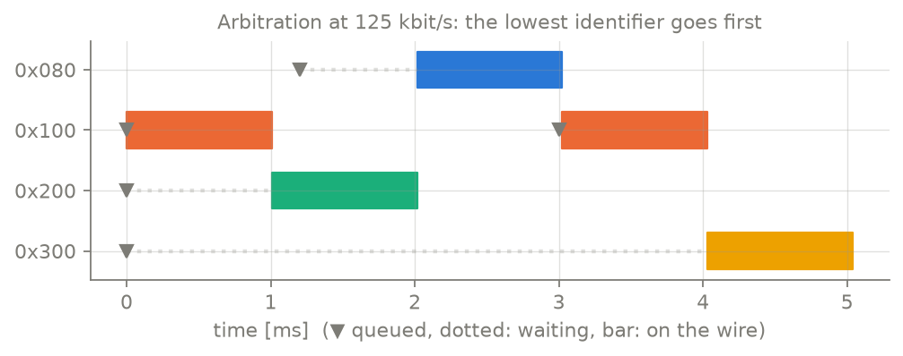
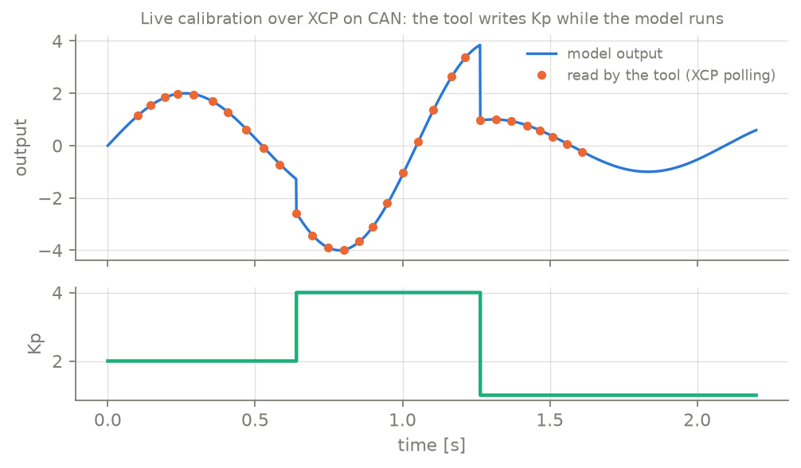

CAN communication¶
ECUs exchange signals over CAN. Which bits of a frame carry which signal, and how to convert them to
physical units, is described in a DBC file. Nervus reads DBC files (uv sync --extra can). Two blocks in
the CAN library convert between signals and bytes; the others simulate whole
CAN buses (below):
| Block | Input | Output |
|---|---|---|
| CAN Unpack | the frame's data bytes (a vector: 8, or up to 64 for CAN FD) | one output per signal, in physical units |
| CAN Pack | one input per signal, in physical units | the data bytes (uint8) |
Set dbc_file (relative paths are relative to the model file), choose the message from the drop-down, and optionally list the signals to use (empty = all, in DBC order).

Conversion¶
Each signal occupies length bits starting at start bit:
- Intel byte order (
@1in the DBC): the start bit is the signal's least significant bit; bytes are in little-endian order. - Motorola byte order (
@0): the start bit is the signal's most significant bit; bytes are in big-endian order. - Signed signals (
-) are two's complement.
CAN Pack rounds to the nearest raw value (half away from zero) and saturates to the bit field, so an out-of-range value is sent as the closest representable one.
Bit-exact and generatable¶
Packing and unpacking use the same 64-bit integer arithmetic in the simulation and in the generated C code.
The test suite checks the decoding against the cantools library for random frames, and checks the
generated C against the simulation with zero tolerance. A typical use is an ECU subsystem with a CAN Unpack
at its inputs and a CAN Pack at its outputs; the generated step() function then reads and writes raw frames.
CAN FD, multiplexing and value tables¶
CAN FD frames carry up to 64 data bytes, and the data part is sent at a faster bit rate (e.g. 2 Mbit/s
after arbitration at 500 kbit/s). Messages that the DBC file marks as FD (VFrameFormat) work everywhere:
CAN Pack outputs and CAN Unpack expects as many bytes as the message has, the bus computes the frame time with
both bit rates (data_bitrate on the CAN Bus block), and the trace and log files mark them as FD frames.
Multiplexed messages reuse the same bytes for different signals, chosen by a multiplexer signal
(M in the DBC; the multiplexed ones are m1, m2, ...). For example Diagnostics in
examples/data/chassis.dbc sends the oil temperature and pressure when Page = 1 and the battery voltage
and ambient temperature when Page = 2. CAN Pack writes a multiplexed signal only when the multiplexer value
selects it; CAN Unpack outputs it when it is in the frame and holds the last value otherwise.
Signals with a value table (VAL_, e.g. GearSelector: 0 Park, 1 Reverse, 2 Neutral, 3 Drive) are
shown with their names in the CAN Bus Trace (GearSelector=3 (Drive)).
How each signal's bits are spread over the bytes (both byte orders, any frame length) is computed once from the DBC file; the simulation and the generated C code extract the same runs of bits, so FD and multiplexed messages are bit-exact in C too.
DBC signals in the workspace¶
Model Workspace ▸ Import DBC… adds the signals and value tables of a DBC file as workspace variables:
- every value-table entry as a constant
<Signal>_<Name>, e.g.GearSelector_Drive = 3, so the model compares withGearSelector_Driveinstead of a magic 3; - every signal as a variable with its initial value, unit, range and comment: a data dictionary of the bus.
They are constants (not calibratable); names that already exist are kept, and one Undo removes the whole
import. In Python: nervus.can.dbc_variables("chassis.dbc").
Simulated CAN buses¶
Pack and Unpack turn signals into bytes; the blocks below put those bytes on a simulated bus, so several ECUs can talk to each other with realistic timing, and faults can be injected.
| Block | What it does |
|---|---|
| CAN Transmit | sends a message: periodic (its sample_time; 0 = the DBC's GenMsgCycleTime), on_change or on_trigger; signals or raw bytes (payload); fault injection |
| CAN Receive | the last received frame: one output per signal (or the 8 bytes), then new (a frame arrived this sample) and age (seconds since the last frame) |
| CAN Bus | bit rate of a bus, its load as an output, and optionally a real interface |
| CAN Rest Bus | sends every message of the ECUs that are not modelled, at their DBC cycle times |
| CAN Gateway | forwards chosen identifiers from one bus to another |
| E2E Protect / E2E Check | AUTOSAR-style end-to-end protection: CRC-8 and alive counter (with C code) |
Buses are identified by name (bus, default can0); blocks anywhere in the model, also inside ECU
subsystems, that use the same name share the bus.
Timing and arbitration¶
A standard data frame with n data bytes has \(44 + 8n\) bits (from the start bit to the end of frame) plus stuff bits (after five equal bits the sender inserts an opposite one), plus 3 bits of inter-frame space. The simulation counts the stuff bits of the real bit pattern, including the CRC-15. At 500 kbit/s an 8-byte frame takes about 0.25 ms.
When the bus becomes idle, every waiting frame starts at once and the lowest identifier wins the arbitration; the others wait. Low-priority messages therefore see the longest delays, which grow quickly with the bus load:

A frame reaches the CAN Receive blocks when its last bit has been sent; the receiver's task reads it at its next sample, like a mailbox. The CAN Bus block outputs the load (the share of time the bus was busy); keep a real bus below about 50 to 70 %.
Fault injection¶
CAN Transmit can make its frames misbehave from fault_time on: drop (probability that a frame is lost), delay (extra latency), corrupt (probability of a flipped data bit: an error behind the CAN CRC, e.g. in a gateway, which only an E2E check detects) and bus_off (the node stops sending). A receiver sees lost frames as a growing age; this is how timeout monitors and U-codes (lost communication) are tested.
End-to-end protection (E2E)¶
Safety-relevant signals carry their own check, independent of the bus: E2E Protect writes an alive counter (0 to 14, one step per frame) and a CRC-8 (SAE J1850, polynomial 0x1D) over a 16-bit data ID and the other bytes. E2E Check at the receiver reports ok, no_new_data, wrong_crc, repeated (stuck sender) or wrong_sequence (more than max_delta frames lost) and a valid flag. Put Protect between CAN Pack and CAN Transmit (payload = bytes), and Check after CAN Receive (payload = bytes). Both generate C code that matches the simulation bit for bit.
Rest-bus simulation and gateways¶
An ECU under test expects all the messages of its bus. CAN Rest Bus sends the messages of the nodes
you do not model (every sender in the DBC file if empty) at their cycle times, with signal values from
values (e.g. VehicleSpeed=50). CAN Gateway routes identifiers from one bus to another, as the
central gateway does between powertrain and body CAN; it adds up to one task period of latency.
Trace and log files¶
Tools ▸ CAN Bus Trace lists every frame of the last simulation: time, identifier, message, sender, bytes and the decoded signals, with the bus load. Export to ASC (text) or BLF (binary), the Vector log formats that CANalyzer, CANoe, SavvyCAN and python-can read. In Python:
from nervus.canbus import bus
b = bus("powertrain") # after a simulation
b.load(0.0, 1.0) # 0.037
b.latency(0x100) # queue-to-receive time of each frame
b.write_asc("powertrain.asc")
Real hardware¶
Set interface on the CAN Bus block (socketcan, pcan, kvaser, vector, slcan; needs python-can
and the vendor driver) and channel (e.g. can0 or PCAN_USBBUS1). Every frame the model sends also goes
out on the interface, and frames from it reach the CAN Receive blocks. With real-time pacing
(Simulation ▸ Settings) the model can act as the rest of the car for a real ECU on the bench (HIL-style).
See the tutorial a vehicle network (CAN) in the help contents.
Pack and unpack in Python¶
from nervus.can import load_dbc, pack, unpack
msgs = load_dbc("examples/data/vehicle.dbc")
engine = msgs["EngineData"]
frame = pack(engine, {"EngineSpeed": 812.3, "CoolantTemp": 90})
unpack(engine.signal("EngineSpeed"), frame) # 812.25 (0.25 rpm resolution)
XCP: live measurement and calibration¶
XCP (ASAM MCD-1) is how calibration tools such as INCA and CANape read and change an ECU's memory while it
runs. The tool (the master) sends a command in one CAN frame (request_id, e.g. 0x7F0) and the ECU (the
slave) answers in one frame (response_id, e.g. 0x7F1). The tool knows where each variable is from the A2L
file. Nervus implements the basic commands (CONNECT, DISCONNECT, GET_STATUS, SET_MTA, UPLOAD, SHORT_UPLOAD,
DOWNLOAD, SHORT_DOWNLOAD): enough for polled measurement and for calibration. Event-driven measurement (DAQ
lists) is not implemented.
The simulation as a slave. The XCP Slave block makes a running model reachable. Its inputs are
measurements (measurements: their names) and its outputs are calibration values (calibrations:
workspace variables), which start at the variables' values and change when the tool writes them, like an
ECU's calibration RAM. Wire the outputs where the tunable value is needed. write_a2l("slave.a2l") on the
block writes the matching A2L file (8-byte doubles: calibrations from 0x10000, measurements from 0x20000).
Connect the CAN Bus block to an interface and turn on real-time pacing (Simulation ▸ Settings), and a
calibration tool on a real CAN adapter can measure and tune the model.

Nervus as the tool. nervus.xcp.XcpMaster connects to any XCP-on-CAN slave, the simulated one or a real
ECU, through python-can, and reads and writes variables by name from an A2L file (the one Nervus generates
with the C code, after fill_addresses, or the ECU supplier's):
import can
from nervus.xcp import CanTransport, XcpMaster
ecu = can.Bus(interface="pcan", channel="PCAN_USBBUS1", bitrate=500000)
tool = XcpMaster(CanTransport(ecu, request_id=0x7F0, response_id=0x7F1), a2l="ecu.a2l")
tool.connect()
tool.read("engine_rpm") # polled measurement
tool.write("Kp_idle", 0.8) # calibration